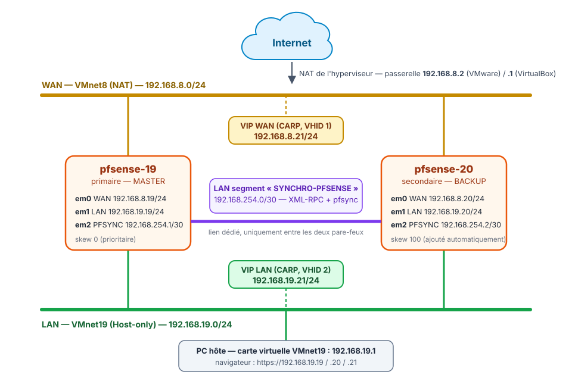

Cluster de pare-feux pfSense en haute disponibilité : cours et travaux pratiques¶
Résumé
Ce parcours en huit parties construit, dans deux machines virtuelles, un cluster actif/passif de deux pare-feux pfSense. Si le pare-feu principal tombe en panne, le pare-feu de secours prend le relais en quelques secondes, sans qu'aucun poste du réseau n'ait à être reconfiguré.
Le cluster repose sur trois mécanismes :
- CARP pour partager des adresses IP virtuelles ;
- pfsync pour recopier la table des connexions en cours ;
- XML-RPC pour répliquer automatiquement la configuration.
Le parcours commence par un cours, continue par cinq travaux pratiques (préparation de l'hyperviseur, installation de pfSense CE 2.7.2, configuration de la haute disponibilité, tests de bascule et exercices corrigés) et se termine par deux prolongements : agrégation de liens LACP et troisième nœud, puis mise à jour du cluster vers pfSense CE 2.9.0 sans interruption de service.
Cette page rassemble ce qu'il faut garder sous la main pendant tout le parcours : le plan, le schéma du lab, les adresses, les comptes et mots de passe, le dimensionnement des machines virtuelles, les instantanés conseillés et les logiciels à télécharger.
| Propriété | Valeur |
|---|---|
| Public | Débutants en réseau qui suivent les étapes dans l'ordre : savoir créer une machine virtuelle et connaître l'adressage IPv4 suffit, aucune connaissance de pfSense n'est demandée |
| Durée totale | Environ 10 à 11 h : 6 h 15 pour le cours, le TP principal et les exercices (parties 1 à 6), 1 h pour la partie 7, 2 h 30 à 4 h pour la mise à jour (partie 8), surtout du temps de téléchargement |
| Versions décrites | pfSense Community Edition 2.7.2, mise à jour en 2.9.0 à la fin du parcours |
| Hyperviseur | VMware Workstation Pro (17, 25H2 ou 26H1) ou Oracle VirtualBox 7 |
| Organisation | Travail individuel, sur un PC disposant d'au moins 8 Go de RAM |
| Dernière mise à jour | 2026-11-07 |
Objectifs du parcours¶
À la fin du parcours, il est possible de :
- expliquer la différence entre un pare-feu seul et un cluster à basculement (fail-over) ;
- préparer des réseaux virtuels (NAT, réseau privé hôte, réseau interne) dans un hyperviseur ;
- installer pfSense et réaliser sa configuration initiale en console puis dans l'interface web ;
- configurer la synchronisation de configuration (XML-RPC) et la synchronisation des états (pfsync) ;
- créer des adresses IP virtuelles CARP et une règle de NAT sortant adaptée à un cluster ;
- écrire des règles de filtrage minimales (seulement ce qui est nécessaire) ;
- tester une bascule, mesurer la coupure et interpréter les journaux en cas de problème ;
- mettre à jour un cluster sans interrompre le service.
Plan du parcours¶
| Partie | Type | Durée | Contenu | Machines allumées |
|---|---|---|---|---|
| 1. Comprendre la haute disponibilité | Cours | 45 min | pfSense, SPOF, actif/passif, adresses IP virtuelles, CARP, pfsync et XML-RPC | Aucune |
| 2. Préparer le lab et installer pfSense | TP | 1 h 30 | Réseaux virtuels, deux machines virtuelles, installation de pfSense CE 2.7.2, interfaces et adresse LAN en console | pfsense-19, pfsense-20 |
| 3. Configuration initiale | TP | 45 min | Interface web, assistant de configuration, interface PFSYNC, premier test de connectivité | pfsense-19, pfsense-20 |
| 4. Synchroniser le cluster | TP | 1 h | Utilisateur ha-user, synchronisation XML-RPC et pfsync, règles minimales du lien PFSYNC |
pfsense-19, pfsense-20 |
| 5. VIP CARP et NAT sortant | TP | 45 min | Adresses IP virtuelles WAN et LAN, règle de NAT sortant vers la VIP | pfsense-19, pfsense-20 |
| 6. Tester la bascule | TP | 1 h 30 | État MASTER/BACKUP, panne simulée, mesure de la coupure, exercices corrigés | pfsense-19, pfsense-20 (+ un poste client, facultatif) |
| 7. Agrégation LACP et troisième nœud | Pour aller plus loin | 1 h | Lien de synchronisation agrégé (LAGG/LACP), principe d'un troisième nœud (non pris en charge par Netgate) | pfsense-19, pfsense-20 |
| 8. Mettre à jour le cluster | TP | 2 h 30 à 4 h | Mise à jour 2.7.2 → 2.8.1 → 2.9.0, mode de maintenance CARP, dépannage | pfsense-19, pfsense-20 |
Les annexes rassemblent le dépannage et les astuces, un aide-mémoire des menus et des commandes, et un glossaire. Les durées sont indicatives : la partie 8 est surtout faite d'attente pendant les téléchargements.
Suivre l'ordre
Chaque TP s'appuie sur le précédent : la partie 4 utilise l'interface PFSYNC créée en partie 3, la partie 6 les VIP et le NAT sortant de la partie 5. Le cours de la partie 1 explique le vocabulaire utilisé partout ensuite. Les parties 7 et 8 sont indépendantes l'une de l'autre : elles partent toutes les deux d'un cluster fonctionnel.
Schéma du lab¶

Le lab utilise trois réseaux virtuels : le WAN (l'extérieur, avec accès à Internet par le NAT de l'hyperviseur), le LAN (le réseau interne, auquel le PC hôte est relié) et SYNCHRO-PFSENSE, un « câble virtuel » qui relie uniquement les deux pare-feux. Leur rôle est expliqué dans la partie 1 et leur création dans la partie 2.
Plan d'adressage¶
| Interface pfSense | Rôle | pfsense-19 (primaire) |
pfsense-20 (secondaire) |
VIP partagée | Réseau virtuel |
|---|---|---|---|---|---|
em0 |
WAN — côté extérieur | 192.168.8.19/24 |
192.168.8.20/24 |
192.168.8.21/24 |
VMnet8 (NAT) — passerelle 192.168.8.2 |
em1 |
LAN — réseau interne | 192.168.19.19/24 |
192.168.19.20/24 |
192.168.19.21/24 |
VMnet19 (Host-only) |
em2 |
PFSYNC — synchronisation (ex-OPT1) | 192.168.254.1/30 |
192.168.254.2/30 |
— | LAN segment « SYNCHRO-PFSENSE » |
Le PC hôte a l'adresse 192.168.19.1 sur le LAN : c'est depuis son navigateur que s'ouvrent les interfaces web des deux pare-feux. Le poste client facultatif de la partie 6 prend l'adresse 192.168.19.50.
Pourquoi un masque /30 pour la synchronisation ?
Un réseau en /30 (masque 255.255.255.252) contient 4 adresses : 192.168.254.0 (adresse du réseau), .1 et .2 (les deux seules adresses utilisables) et .3 (diffusion). Il ne peut donc y avoir que deux machines sur ce réseau, exactement les deux pare-feux. Personne d'autre ne peut s'y glisser avec une adresse valide.
Pour comparaison, un /29 (masque 255.255.255.248) offre 6 adresses utilisables, et un /24 en offre 254.
Utilisateurs de VirtualBox : une seule différence
D'après la documentation d'Oracle, la passerelle d'un « Réseau NAT » VirtualBox est toujours la première adresse du réseau, soit 192.168.8.1, et ce n'est pas modifiable. Partout où ce parcours indique la passerelle ou le DNS 192.168.8.2, utiliser 192.168.8.1 avec VirtualBox. Toutes les autres adresses sont identiques.
Comptes et mots de passe¶
Ce lab est pédagogique : les mots de passe sont écrits ici volontairement pour que chacun puisse suivre à l'identique. En production, chaque mot de passe serait unique, long et rangé dans un gestionnaire de mots de passe, et ne serait jamais publié. Ces mots de passe étant publics, ne jamais les réutiliser ailleurs que dans ce lab, et les changer si le lab devient joignable depuis un autre réseau que le PC hôte.
| Où | Compte | Mot de passe | Créé en |
|---|---|---|---|
pfsense-19 et pfsense-20 : interface web, avant l'assistant |
admin |
pfsense (mot de passe par défaut de pfSense) |
Partie 3 |
pfsense-19 et pfsense-20 : interface web, après l'assistant |
admin |
Tp-PvnpZskdQq (le même sur les deux nœuds) |
Partie 3 |
pfsense-19 et pfsense-20 : synchronisation XML-RPC |
ha-user (privilège System - HA node sync) |
Ha-UdO8Xe29FS |
Partie 4 |
| VIP CARP du WAN et du LAN | — (Virtual IP Password) | Carp-I0yZc4hYXz |
Partie 5 |
Le compte root, utilisé seulement en ligne de commande (dépannage de la partie 8), partage le mot de passe du compte admin.
Un compte ha-user aussi précieux que admin
Le privilège System - HA node sync permet de remplacer la configuration du pare-feu : il équivaut en pratique à un accès administrateur. Son mot de passe se protège comme celui d'admin.
Dimensionnement des machines virtuelles¶
| Machine | Conseillé | Minimal | Disque | Cartes réseau |
|---|---|---|---|---|
pfsense-19 (primaire) |
1 vCPU, 2 Go | 1 vCPU, 1 Go | 20 Go | 3 : WAN, LAN, SYNCHRO-PFSENSE (4 en partie 7) |
pfsense-20 (secondaire) |
1 vCPU, 2 Go | 1 vCPU, 1 Go | 20 Go | 3 : WAN, LAN, SYNCHRO-PFSENSE (4 en partie 7) |
| Poste client (facultatif, partie 6) | 1 vCPU, 1 Go (une petite distribution Linux suffit) | — | Selon le système | 1 : LAN |
- 1 Go de RAM est le minimum officiel de pfSense et suffit pour les parties 1 à 7 (512 Mo fonctionnent en pratique pour un lab).
- La mise à jour de la partie 8 demande 2 Go par VM : avec 1 Go, elle peut échouer faute de mémoire et laisser pfSense inutilisable. Créer directement les VM avec 2 Go évite d'avoir à les modifier plus tard.
- Le disque de 20 Go dépasse largement le minimum officiel de 8 Go.
- PC hôte : au moins 8 Go de RAM, environ 50 Go d'espace disque libre et la virtualisation matérielle (Intel VT-x ou AMD-V) activée dans le BIOS/UEFI. Un accès à Internet est nécessaire pour la mise à jour finale.
Instantanés conseillés¶
Un instantané (snapshot) enregistre l'état complet d'une machine virtuelle et permet d'y revenir en un clic. En cas d'erreur, on y revient en quelques secondes au lieu de tout recommencer. Prendre les instantanés sur les deux pare-feux en même temps, de préférence VM éteintes (console : option 6) Halt system), aux étapes marquées 🛟 :
| Instantané | Moment | Permet de recommencer |
|---|---|---|
01-installation-terminee |
Fin de l'installation de pfSense (partie 2) | La configuration en console et toute la suite |
02-configuration-de-base |
Fin de la partie 3 (adresses, assistant, ping sur PFSYNC) | La synchronisation (partie 4) |
03-synchronisation-ha |
Fin de la partie 4 (XML-RPC et pfsync fonctionnels) | Les VIP et le NAT sortant (partie 5) |
04-cluster-fonctionnel |
Partie 6, juste avant les exercices | Les exercices, puis les parties 7 et 8 avec un cluster propre |
05-avant-mise-a-jour |
Partie 8, étape 1, après la sauvegarde des configurations | La mise à jour, en cas d'échec |
Toujours restaurer les deux VM sur le même instantané : un primaire et un secondaire revenus à des moments différents n'ont plus la même configuration.
VM > Snapshot > Take Snapshot…, avec le nom de l'instantané, sur chaque VM.
Onglet Instantanés de la VM (menu Machine > Outils > Instantanés) puis Prendre, avec le nom de l'instantané, sur chaque VM.
Un instantané n'est pas une sauvegarde
L'instantané reste sur le même disque que la machine virtuelle : si le disque du PC hôte tombe en panne, les instantanés disparaissent avec lui. Pour un pare-feu en production, la sauvegarde de référence est le fichier de configuration XML, exporté dans Diagnostics > Backup & Restore (voir la partie 8).
Logiciels à télécharger¶
| Logiciel | Où le trouver | Remarque |
|---|---|---|
| pfSense CE 2.7.2 (image ISO) | Miroirs ci-dessous | Archive .iso.gz d'environ 575 Mo (ISO décompressée : environ 875 Mo) ; empreinte SHA256 à vérifier |
| VMware Workstation Pro | Page produit VMware | Gratuit pour tous les usages depuis novembre 2024. Téléchargement depuis le portail de support Broadcom, avec un compte gratuit, en choisissant la variante « Personal ». La version 26H1 est la plus récente à la date de rédaction |
| Oracle VirtualBox 7 | virtualbox.org | Gratuit |
| 7-Zip (Windows) | 7-zip.org | Pour décompresser l'archive .iso.gz sous Windows |
Télécharger l'image ISO de pfSense CE 2.7.2¶
Depuis la version 2.8, pfSense CE ne se télécharge plus sous forme d'image ISO autonome. Il faut passer par le Netgate Installer, un installeur en ligne qui exige un compte Netgate et une connexion Internet pendant l'installation. Pour un TP, il est plus simple et plus fiable d'installer la version 2.7.2 depuis une ISO hors ligne, puis de mettre le cluster à jour à la fin (voir la partie 8). Cela permet aussi d'apprendre la procédure de mise à jour d'un cluster.
Des sites miroirs hébergent toujours l'ISO 2.7.2 :
- Dakota State University (États-Unis), archive compressée : https://repo.ialab.dsu.edu/pfsense/pfSense-CE-2.7.2-RELEASE-amd64.iso.gz
- Fagskolen Innlandet (Norvège), ISO directe : https://ftp.fagskolen.gjovik.no/pub/pfSense/pfSense-CE-2.7.2-RELEASE-amd64.iso
Un fichier en .iso.gz est une archive compressée : il faut la décompresser pour obtenir le fichier .iso à insérer dans le lecteur CD virtuel. Sous Windows, utiliser 7-Zip (clic droit > 7-Zip > Extraire ici). Sous Linux, utiliser gunzip.
Vérifier l'intégrité du téléchargement permet de s'assurer que le fichier n'a été ni corrompu ni modifié. L'empreinte SHA256 officielle de l'archive pfSense-CE-2.7.2-RELEASE-amd64.iso.gz est :
Résultat attendu
L'empreinte affichée est identique à celle ci-dessus. Si elle diffère, supprimer le fichier et le télécharger à nouveau.
Convention de lecture¶
Dans les TP, chaque action commence par un repère qui indique où elle se fait :
| Repère | Où se fait l'action |
|---|---|
| 🖥️ | PC hôte : l'hyperviseur (réseaux virtuels, VM, instantanés), le navigateur ou un terminal du PC |
| 1️⃣ | Primaire pfsense-19 (192.168.19.19), le pare-feu qui porte normalement le trafic |
| 2️⃣ | Secondaire pfsense-20 (192.168.19.20), le pare-feu de secours |
| 1️⃣ 2️⃣ | Les deux pare-feux, l'un après l'autre |
- Les interfaces web des deux pare-feux s'ouvrent dans le navigateur du PC hôte : les repères 1️⃣ et 2️⃣ désignent le pare-feu sur lequel on agit, que ce soit dans sa console ou dans son interface web. Beaucoup d'erreurs viennent d'une action faite sur le mauvais nœud : relire le repère avant chaque manipulation.
- Les menus sont donnés en anglais, la langue par défaut de pfSense, suivis de leur équivalent français : Firewall > Rules (Pare-feu > Règles).
- Pour savoir sur quel pare-feu une capture a été prise, se fier au texte qui l'accompagne ou à l'adresse visible en haut de l'image :
192.168.19.19pour le primaire,192.168.19.20pour le secondaire. Les captures mélangent l'interface en français et en anglais. Pour s'y retrouver soi-même, la partie 3 propose de distinguer les deux pare-feux par la langue et le thème. - Les encadrés « Pourquoi ? » expliquent ce que fait chaque réglage, et les questions de révision de fin de partie vérifient qu'il est compris : comprendre vaut mieux que recopier.
Ressources¶
- Netgate — Configuring High Availability (recette complète) — La procédure de référence de l'éditeur.
- Netgate — High Availability : vue d'ensemble — CARP, pfsync, XML-RPC et leurs exigences.
- Netgate — Configuration synchronization (XML-RPC) — Ce qui est synchronisé, et ce qui ne l'est pas.
- Netgate — State synchronization (pfsync) — Fonctionnement et règles nécessaires.
- Netgate — Upgrading a High Availability Cluster — Ordre officiel de mise à jour.
- Netgate — CARP Status — Désactivation temporaire et mode de maintenance.
- Netgate — High Availability in virtual environments — Réglages des hyperviseurs (mode promiscuité).
- Netgate — Troubleshooting upgrades — Que faire si la mise à jour échoue.
- Netgate — Notes de version pfSense CE 2.9.0
- Netgate — LAGG Interfaces
- Oracle — Modes réseau de VirtualBox
- FreeBSD — page de manuel carp(4) — Fonctionnement détaillé de CARP, préemption et rétrogradation.
- Wikipédia : Basculement (informatique), Haute disponibilité, CARP, pfsync, XML-RPC, IEEE 802.3ad
- Parcours Veeam Backup & Replication — le parcours de sauvegarde du wiki, dont le lab se branche sur le LAN de ce cluster.
- Commencer le parcours : Comprendre la haute disponibilité.